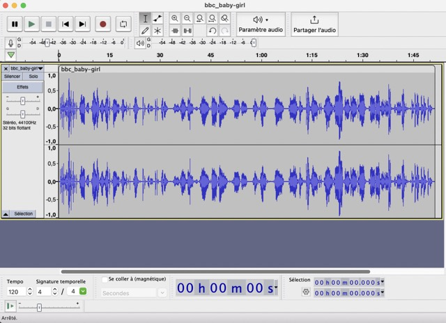
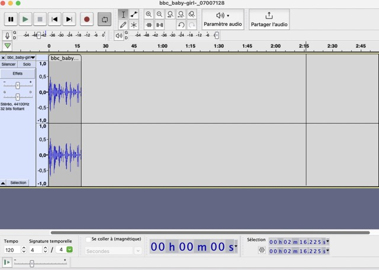
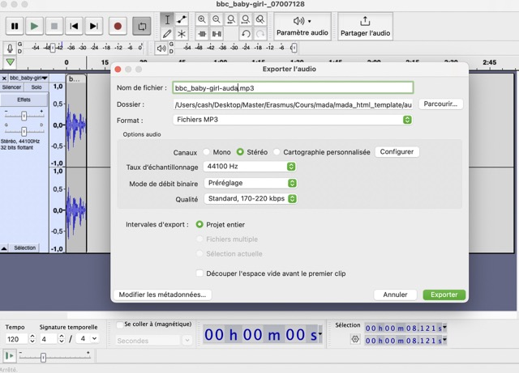

Week 8
IL task 1 - analyse the use of audio on the web
The website closest to my subject, Let toys be toys, doesn't use audio, so I can't use it for my analysis. So I analysed one of the websites listed on Awwwards website : My attention was drawn to the website created by Ryan Strzok

The website uses background music for atmosphere. I liked the fact that you could change the radio to choose the style of music. However, I don't think this adds much to the website. I would have found it interesting if the sound had changed automatically according to the mood of the digital campaigns created by the author.
As I wasn't satisfied with the results of the first website, I decided to analyse another website created by The Digital Panda.


I really liked the background music, which really added to the site. It's a horror universe and we have to link the objects in the house with the horror films in which they appeared. The background music is similar to horror music, which creates a special, more gripping atmosphere. What's more, as you navigate through the house, there are sound effects such as evil laughter, creaking doors and creaking stairs. These sound effects also add a real plus to the navigation and atmosphere.
So I decided to follow the example of the second example and choose background music with a link of my website. My Website talk about the advertising for children, one of my first idea is to find an audio with children at play.
IL task 2 - Generate a portfolio of audio content
Like I said before, my first idea is to find a background music with a link of my website. For me to be a children is like innocence and also happiest moment, it's why I search for a music with this ambiance.
I devide to use two types of sounds in my website.
- On Soundcloud, I found a channel with freemusic created by Oleg Mazur :
- On Pixabay, I researched : "happy children" and I found these musics :
Backroung music
The goal here is to use a type of music who can remember childhood without to be too much for an adult. In fact, I need to saty focus on my audience. During my research, I used different website and search for a music with this type of following mood : feel good, positive, funny, happy. There are the following music I found :
This first one is a little too repetitive
Sounds effects
As my website is intended to be interactive, I took inspiration from The digital panda. When people click on the 'sexist' button, I want to play the sound of a child crying. When someone clicks on the 'feminist' button, I'd like to have a happy child. The objective here is not to have a sound if the person is good or not but that when they click on the button it creates emotions for them, in particular the fact of associating sexist advertising with something sad.

I used the BBC website to find sound effects of children crying. Here are the 2 sounds I found:
  
There is the final sound effect for the sexist button

Like I said, the goal is to associate sadness when the users click on "sexist" but when they click on "feminist" I want to create joy. It's why, I choosed an happy child. I didn't find a good sounds effect on BBC website so I used Pixabay and I found an interesting one :
As I also found the sound effect too long, I cut it with Audacity in the same way as the previous sound.